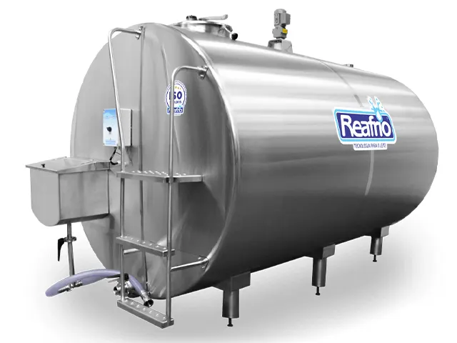
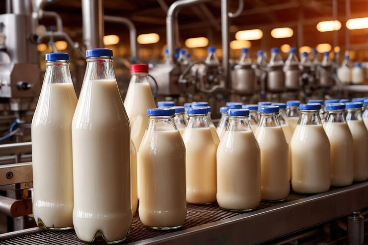
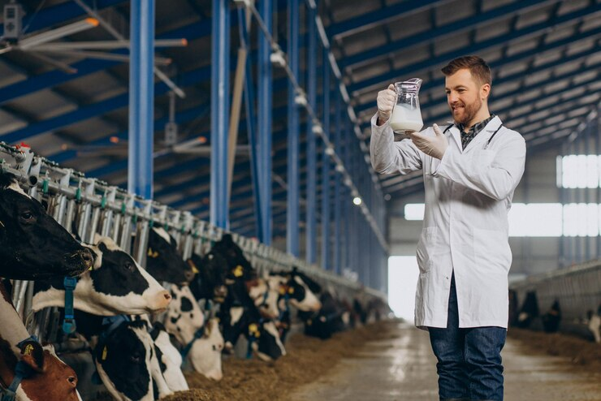

O armazenamento e a pasteurização do leite são etapas cruciais para garantir a segurança e a qualidade do produto antes de chegar ao consumidor final. Aqui está uma visão geral dessas etapas:
Armazenamento do Leite:
Tanques de Resfriamento:
Após a ordenha, o leite é rapidamente resfriado e armazenado em tanques de resfriamento a granel. Esses tanques mantêm a temperatura do leite em torno de 4°C, o que é crucial para inibir o crescimento bacteriano e preservar a qualidade do leite até seu transporte.
Transporte Refrigerado:
O leite é transportado das fazendas até os laticínios em caminhões-tanque isotérmicos que mantêm a temperatura baixa durante todo o percurso, evitando contaminação e degradação do produto.
Armazenamento nos Laticínios:
Nos laticínios, o leite continua a ser armazenado em grandes tanques refrigerados até o momento do processamento. O leite cru pode ser mantido por um curto período, geralmente não ultrapassando 48 horas, para garantir a frescura.
Pasteurização do Leite:
Objetivo da Pasteurização:
A pasteurização é um processo térmico que tem como objetivo destruir micro-organismos patogênicos (como bactérias, vírus e protozoários) e reduzir a carga microbiana total, aumentando a segurança e a vida útil do leite.
Processo de Pasteurização:
Pasteurização Tradicional (HTST - High Temperature Short Time): O leite é aquecido a uma temperatura de 72°C por 15 segundos e depois rapidamente resfriado. Esse é o método mais comum usado em todo o mundo. Pasteurização Ultra-Alta Temperatura (UHT): O leite é aquecido a temperaturas entre 135°C e 150°C por 2 a 5 segundos. O leite UHT pode ser armazenado por longos períodos sem refrigeração, até ser aberto. Pasteurização Baixa Temperatura e Longo Tempo (LTLT): O leite é aquecido a 63°C por 30 minutos. Esse método é menos comum, utilizado em alguns casos específicos, como em produtos artesanais.
Controle de Qualidade:
Após a pasteurização, o leite é submetido a testes para garantir que a temperatura e o tempo foram suficientes para destruir patógenos sem comprometer a qualidade nutricional e o sabor do leite.
Armazenamento Pós-Pasteurização:
Embalagem:
Após a pasteurização, o leite é embalado em recipientes esterilizados, como caixas de papelão revestidas, garrafas plásticas ou de vidro, para evitar recontaminação.
Distribuição e Armazenamento:
O leite pasteurizado deve ser mantido refrigerado durante o transporte e o armazenamento nos pontos de venda, como supermercados, até ser adquirido pelo consumidor.
Vida Útil:
A pasteurização prolonga a vida útil do leite, que, sob refrigeração adequada, pode durar entre 7 a 14 dias no caso do leite pasteurizado tradicional e vários meses no caso do leite UHT, se não aberto. Esses processos são essenciais para garantir que o leite chegue ao consumidor de forma segura, mantendo suas qualidades nutricionais e seu sabor.